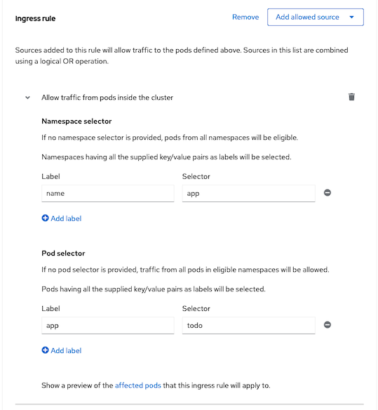
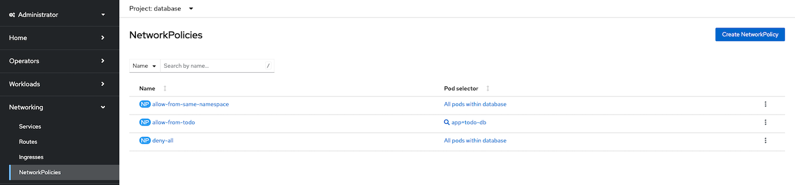

Network Policy
Deploy sample app
- Deploy PostgreSQL to namespace database and deploy application todo to namespace app
oc new-project database
cat manifests/todo-kustomize/base/todo-db.yaml|sed -r 's/(.*)(namespace:)(.+)/\1\2 database/' | \
oc create -f -
oc wait --for condition=ready pod -l app=todo-db --timeout=300s -n database
oc new-project app
oc get secret todo-db -n database -o yaml|sed -r 's/(.*)(namespace:)(.+)/\1\2 app/'|\
oc create -f -
cat manifests/todo-kustomize/base/todo.yaml|sed -r 's/(.*)(namespace:)(.+)/\1\2 app/'| \
oc create -f -
oc -n app set env deploy/todo quarkus.datasource.jdbc.url=jdbc:postgresql://todo-db.database.svc.cluster.local/todo
oc wait --for condition=ready pod -l app=todo --timeout=300s -n app
oc -n app set env deploy/todo quarkus.http.access-log.enabled=true
oc wait --for condition=ready pod -l app=todo --timeout=300s -n app
Create Network Policy
- Label namespace database for using in network policy
oc label ns app tier=api
oc label ns database tier=database
- Enable network policy audit log on namespace database with severity info for allow and warn for deny.
oc annotate ns database k8s.ovn.org/acl-logging='{"deny": "warning","allow": "info"}'
oc annotate ns app k8s.ovn.org/acl-logging='{"deny": "warning","allow": "info"}'
Remark:
- Severity including alert, warning, notice, info and debug.
- Audit log is located at /var/log/ovn/acl-audit-log.log
Namespace Database
- Create policy to deny all incoming traffic to namespace database
oc create -f manifests/network-policy-deny-all.yaml -n database
- Delete todo pod because network policy will not applied for already establised connection
oc delete po --all -n app
- Check status of application todo and its log.
NAME READY STATUS RESTARTS AGE
todo-8686ddf468-pfnbh 0/1 Running 0 21m
Check pod's log and you will find connnection failed
2024-07-12 07:39:01,015 INFO [io.sma.health] (vert.x-eventloop-thread-1) SRHCK01001: Reporting health down status: {"status":"DOWN","checks":[{"name":"Database connections health check","status":"DOWN","data":{"<default>":"Unable to execute the validation check for the default DataSource: Acquisition timeout while waiting for new connection"}}]}
2024-07-12 07:43:30,127 WARN [io.agr.pool] (agroal-11) Datasource '<default>': The connection attempt failed.
2024-07-12 07:43:30,127 WARN [io.agr.pool] (agroal-11) Datasource '<default>': Closing connection in incorrect state VALIDATION
Create policy to allow traffic from same namespace
Use CLI with YAML file
oc create -f manifests/network-policy-allow-from-same-namespace.yaml -n databaseUse Administrator Console
- Navigate to Networking -> Network Policies and Select Create Create NetworkPolicy
Select Ingress Policy with allow from same namespace and there is no need to config pod selector because we want to this rule to apply to all pods

Create policy for allow ingress traffic to PostgreSQL pod in namespace database
Applied to pod in namespace database with label
| Label | Value | |-----------|-------| | app| todo-db |
Allow namespace with label
| Label | Value | |-----------|-------| | name | app | | tier| api |
Allow only pod in above namespace with label
| Label | Value | |-----------|-------| | app | todo |
- Use CLI with YAML file
oc create -f manifests/network-policy-allow-from-todo.yaml -n database Use Administrator Console
- Navigate to Networking -> Network Policies and Select Create Create NetworkPolicy
Config pod selector for database namespace
Remark: Click affected pod to previews which pods will be affected by this rule

Config allow ingress traffic from namespace app

- Config allow port

Check all network policies applied to namespace database

Check application todo log again.
2024-07-12 08:20:56,016 INFO [io.qua.htt.access-log] (vert.x-eventloop-thread-1) 10.132.0.2 - - [12/Jul/2024:08:20:56 +0000] "GET /q/health/ready HTTP/1.1" 200 220 "-" "kube-probe/1.27"
Namespace app
- Create policy to deny all incoming traffic to namespace app
oc create -f manifests/network-policy-deny-all.yaml -n app
- Create policy to allow incoming traffic to namespace app from ingress
oc create -f manifests/network-policy-allow-ingress.yaml -n app
Audit Log
Check todo and todo-db pod IP addresses
todo
NAME READY STATUS RESTARTS AGE IP NODE NOMINATED NODE READINESS GATES todo-8686ddf468-pfnbh 1/1 Running 0 44m 10.132.0.33 cluster2-42cfa8e0-5zhxq <none> <none>todo-db
NAME READY STATUS RESTARTS AGE IP NODE NOMINATED NODE READINESS GATES todo-db-85dff77b8b-gxrrh 1/1 Running 0 45m 10.132.0.30 cluster2-42cfa8e0-5zhxq <none> <none>Check audit log on node which todb-db run by using command oc debug/
or with Administrator Console (Compute->Nodes). With both method you need to run comand chroot /host and log is located at /var/log/ovn/acl-audit-log.log - Deny
2024-07-12T08:00:50.098Z|00040|acl_log(ovn_pinctrl0)|INFO|name="NP:database:Ingress", verdict=drop, severity=warning, direction=to-lport: tcp,vlan_tci=0x0000,dl_src=0a:58:0a:84:00:01,dl_dst=0a:58:0a:84:00:1e,nw_src=10.132.0.33,nw_dst=10.132.0.30,nw_tos=0,nw_ecn=0,nw_ttl=63,nw_frag=no,tp_src=40504,tp_dst=5432,tcp_flags=psh|ack 2024-07-12T08:00:50.098Z|00041|acl_log(ovn_pinctrl0)|INFO|name="NP:database:Ingress", verdict=drop, severity=warning, direction=to-lport: tcp,vlan_tci=0x0000,dl_src=0a:58:0a:84:00:01,dl_dst=0a:58:0a:84:00:1e,nw_src=10.132.0.33,nw_dst=10.132.0.30,nw_tos=0,nw_ecn=0,nw_ttl=63,nw_frag=no,tp_src=40504,tp_dst=5432,tcp_flags=ackDetails:
| Parameter | Value | |-----------|-------| |Timestamp |2024-07-12T08:00:50.098Z| |Serial (Running number)| 00040 | |ACL Name | NP:database:Ingress | |Allow or Drop | verdict=drop | |Direction| to-lport (incoming to pod) or from-lport (outgoing from pod)| |Details in OpenFlow format|tcp,vlan_tci=0x0000,dl_src=0a:58:0a:84:00:01,dl_dst=0a:58:0a:84:00:1e,nw_src=10.132.0.33,nw_dst=10.132.0.30,nw_tos=0,nw_ecn=0,nw_ttl=63,nw_frag=no,tp_src=40504,tp_dst=5432,tcp_flags=ack|
Details: | Parameter | Value | |-----------|-------| |Source MAC |dl_src=0a:58:0a:84:00:01| |Destination MAC| dl_dst=0a:58:0a:84:00| |Source IP| nw_src=10.132.0.33| |Destination IP| nw_dst=10.132.0.30| |DSCP bits|nw_tos=0| |ECN bits|nw_ecn=0| |TTL|nw_ttl=63| |Source Port|tp_src=40504| |Destination Port|tp_dst=5432| |TCP Flags|tcp_flags=ack|
Allow
2024-07-12T07:56:50.098Z|00017|acl_log(ovn_pinctrl0)|INFO|name="NP:database:allow-from-todo:Ingress:0", verdict=allow, severity=info, direction=to-lport: tcp,vlan_tci=0x0000,dl_src=0a:58:0a:84:00:01,dl_dst=0a:58:0a:84:00:1e,nw_src=10.132.0.33,nw_dst=10.132.0.30,nw_tos=0,nw_ecn=0,nw_ttl=63,nw_frag=no,tp_src=40504,tp_dst=5432,tcp_flags=ack 2024-07-12T07:56:50.098Z|00018|acl_log(ovn_pinctrl0)|INFO|name="NP:database:allow-from-todo:Ingress:0", verdict=allow, severity=info, direction=to-lport: tcp,vlan_tci=0x0000,dl_src=0a:58:0a:84:00:01,dl_dst=0a:58:0a:84:00:1e,nw_src=10.132.0.33,nw_dst=10.132.0.30,nw_tos=0,nw_ecn=0,nw_ttl=63,nw_frag=no,tp_src=57262,tp_dst=5432,tcp_flags=psh|ackRemark name="NP:database:allow-from-todo:Ingress:0" indicates that network policy allow-from-todo allow incoming traffic
Audit Log Configuration
Log size, number of retained log files, rate limit and syslog server can be configured. Following YAML show default configuration
apiVersion: operator.openshift.io/v1
kind: Network
metadata:
name: cluster
spec:
defaultNetwork:
ovnKubernetesConfig:
policyAuditConfig:
destination: "null" # libc -> journald / udp:<host>:<port> -> external syslog server
maxFileSize: 50
rateLimit: 20 # messages per sec
syslogFacility: local0 # kern - RFC5424